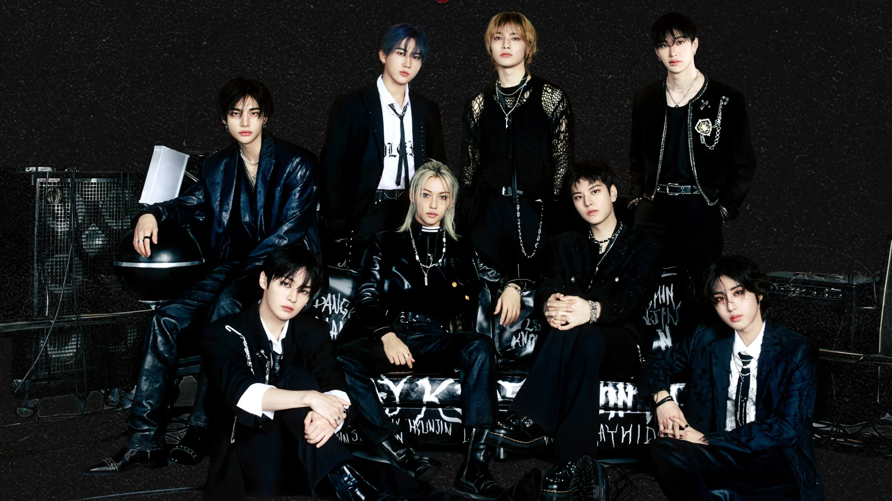

Stray Kids is a South Korean boy group formed by JYP Entertainment in 2017. The group consists of eight members: Bang Chan, Lee Know, Changbin, Hyunjin, Han, Felix, Seungmin, and I.N. They are known for their energetic performances, self-produced music, and meaningful lyrics that resonate with fans around the world. Learn more on their Wikipedia page.
Stray Kids are my favorite band because their music is powerful and inspiring. Their songs motivate me to keep going even when life feels tough. I also admire how the members write and produce their own music, showing their dedication and creativity. I managed to go to their concert this summer. I had a blast and their energy was unmatched like anything I saw before. They left a great impression on me.
Visit the official Stray Kids Website.